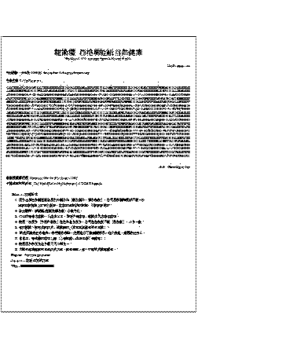

西格瑪能紙和日曆使用方法
1AUHC6wpgF676cEd8uZX6cU8BucGU4KAP7
- 產品原理：西格瑪能＋納米中醫
- 產品款式：
- 功能納米能紙系列（與ς能紙的分別是有明確指向性，針對性強，功能增強）
- 列印：須用第一次收到，和第一次印出的版本，留意授權列印份數（您購買的數量）；
- 違反授權列印頁數（打印數目超過訂購數目）者，將被視為心不誠；
- 列印時機械故障，可修好後重印，以完整印出為準（機械或軟件問題致打印不完整或不清晰者，不影響使用）；
- 產品自行下載，或以電郵附件發出（附件如何開啟）；
- 可用黑白打印，產品上的顏色部份可以黑色顯示；
- 使用期限：每份僅供一人使用 7日；
- 受益人士：僅限購買者（或收件人）及其親屬，購買前必須指定（可用姓名標籤），不可更改和轉讓；
- 受益者僅限親屬之間（因血統、婚姻或收養而與自己有關係者。如血親、姻親、配偶均屬之）；
- 保存期限：6個月（以收貨日起計）。逾期作廢；
- 禮物 (ς能紙)
- 列印：同上；
- 使用期限：同上；
- 受益人士：購買者（或收件人）及其親屬，可以更改或轉讓一次；
- 可直接用收件人的電郵註冊購買（不需其他任何資料），亦可由你購買後打印贈送；
- 保存期限：同上；
- 網上ς能紙（網上西格瑪能紙）
- 途徑：直接從網上自行列印使用，可使用網上自助診療系統，不需假手他人（懸壺濟世，我們將此壺掛在互聯網上）；
- 收費：用者自付原則（使用者必須支付其可以支付和應該支付的費用）。產品的價值由價格決定（正比）；
- 診金隨奉：根據你的能力和願望支付，豐儉由人（不需提供收據、數目或知會我們）。這是任何人都可負擔的醫療收費方式，詳閱診金隨奉vs處方療效；
- 付費是對文化的尊重或心意，所以次數或多少並不是原則問題。時間、交通或有不便者，可待日後再說（有錢出錢，冇錢出力，中醫的受益者有責任為中醫盡心盡力）；
- 第一次使用（指從未使用過我們任何產品，包括推廣活動產品）者不需付費，只是第二次使用前，才補交前一次的費用（這是上次的診金，不是這次的），用完或滿意後才付費。以此類推，每次都是交前一次的診金（如此可保證你永不吃虧）；
- 如不遵循我們的要求，療效將會緩慢和不穩定（效微甚至無效），所有服務均不受保障，服務中的內容會受到限制，且只開放「未病、欲病和已病」之中「已病」的一小部份；
- 列印：直接在網上打印，1頁即可；如果因為打印機或軟件的問題，以致打印不完整，不影響使用；
- 此方必須由本網址直接用打印機印出，無數量限制，不准複印（複印無效，如鈔票複印無效一樣），不可複製；
- 此為不定期發佈，如印出後網上又發佈新方，此前印出的仍然有效（有效期內），不需重新列印；
- 如此，同一段時間內就會有幾種療方並存，效果基本一樣；有條件者建議使用新方（即每次僅打印一張），上網打印困難者亦可一次打印多幾份；
- 用完之後，網上的方無論更新與否，都可重新打印使用（有效期內）；
- 列印前刷新網頁（連續打印者印前刷新一次，將打印“份數”設為你需要的數目，即可連續打印，不需每張刷新）；
- 以全新沒用過的白紙打印，勿用另一面已用過的紙，尊重之；此時不存在浪費的問題，生命畢竟比紙重要和珍貴；
- 如紙張在打印時折損、折皺，應棄之不用；勿折疊療方（未用時）；
- 紙不可縮印，打印出來是什麼就是什麼（有些操作系統或打印程式，在打印時可選擇"縮放的百分比"，正確是 100%），不可剪裁；
- 處方打印需 2頁紙，出來的字很大？
- 使用期限：每份僅供一人使用 3日；
- 受益人士：任何人，未用之前可更改；
- 任何人都可為別人（不論是否親戚）付款，只是之後不可再向受益人收取（以免產生另一種商業行為）；
- 除我們以外，任何人（包括法人）都不准收取或代為收取此網上療方的任何費用或利益，無論任何理由或目的；
- 保存期限：請在有效期限之前使用，逾期無效；
- 捷運ς能紙（捷運西格瑪能紙）
- 途徑：直接從網上自行列印使用，可使用捷運自助診療系統；
- 收費：按照標價自行付款，之後打印和使用。產品的價值由價格決定（正比）；
- 受益人士：購買者及其親屬，購買前已確定，不可更改；
- 網上ς日曆（網上西格瑪日曆）
- 產品特點：可以折疊保存（這是與能紙不同之處，是能紙的姊妹版），方便隨身攜帶（以為應急）；
- 沿日曆外框線裁剪、撕下或開始使用後，開始計時；
- 產品具有全息性，唯要求勿破壞日曆外框線（外框線必須保持完整）；撕下的日曆折疊與否、字面朝向沒特定要求；
- 有效部份：日曆外框線之內部份（其餘部份可即時棄之，亦可與使用期限之後作廢的日曆一起棄之）；
- 使用期限：每份僅供一人使用 2日；
- 餘同網上ς能紙；
- 使用方法：
- 將此能紙（字朝外折疊，大小不限，只是不可破損）放在貼身衣袋中，亦可放在枕頭下面（臥床者）；
- 折疊或開始使用後，開始計時，使用期限之後作廢；
- 期滿須取出，就算沒有新方也不可繼續使用或保留（因此之後對人體健康並不合適）；
- 留意勿放在錢包裡，以免銅臭味玷污之；如需外包裝可自行在市場挑選（必須是薄布，如用塑膠袋須在袋上打幾個孔）；
- 每日佩戴時間：24小時連續，非必要勿取出（洗澡時可以取出）；
- 日的概念：以早上起床為一日的開始（新的一天開始），晚上入睡為一日的結束，半夜醒來算次日；
- 可以固定一個時間（如睡前或晨起）除舊更新。每次如此，就不易混淆；
- 如家裡有日曆，可在要更換那一天的日曆寫上備忘。手機和電腦的日曆亦可如此考慮，或可設為每三天自動提醒；
- 有雅致者，亦可看看或照本宣科，或許有意想不到的收益；
- 交通工具平安功能系列能紙：折好放在交通工具（如汽車）前窗左下角；
- 手機拍照或下載──讓你的手機具有健康功能，同時具有劃時代意義，亦是里程碑和公開的挑戰！
- 拍攝或截屏：
- 將瀏覽器的顯示字型設為最小、全螢幕；
- 用微距（如有此功能），關閃光燈（否則需調整角度以免反光影響畫面）；
- 拍攝的圖像必須清晰，盡量保留平時打印能看到的部份，包括第一行和注意事項（頭尾）；
- 截屏者為避免處方被同步到雲端，請在截屏之前把iCloud照片、谷歌相冊等App的同步關掉；
- 下載（手機沒拍照功能者）：
- 用電腦將此頁能紙轉變成圖像（PDF, JPG, GIF, BMP...，格式不限，但須能用手機瀏覽），如多人使用可生成多個圖像（圖像用時才臨時產生）；
- 將圖由電腦直接發往手機（數據線、藍芽或紅外等），每圖僅限使用（裝入手機）一次（隨即刪除電腦裡此用過的圖）；
- 使用：每日瀏覽5次或以上（不需仔細閱讀，粗略看看數字部份即可），瀏覽和相隔時間不限；
- 注意：
- 手機不可以再次轉發圖像去別的手機（只能一次性的電腦→手機，不允許手機→手機）；
- 由拍照或下載之時起算，有效期滿必須將手機內的圖像刪除（將能紙存在記憶體和用紙打印一樣，只是載體不同）；
- 此法環保（節省紙張），方便急用和沒打印機者（83%的手機具備拍照功能，智能手機為92.5%）；
- 但如當事者場強太差（如病重者），將有可能影響或損壞手機，請自行權衡得失（如有以上異狀，包括聲嘶雜訊、接收和通話困難、電池很快沒電、按鍵異常或無法使用等徵狀），異狀原理參閱就診須知；
- 多成婦幼保護的能紙建議使用A4紙打印（畢竟目的有所不同）；
- 數碼相機拍攝──讓你的相機具有健康功能（用可隨身攜帶的小型數碼相機）
- 他維空間中醫使用法
- 注意事項：產品或包裝上不准書寫，不可破損，否則作廢棄之（收貨之前引致者不受此限）；
- 產品出現變色、破碎、異味等異狀時，是正常現象（能量場轉換），請立即棄之（另購新品）；
- 我們的工作人員獲授權：可以在外包裝上書寫編號，以助辨識；
- 瞑眩反應是正常現象，是療效的體現和反應（含後續反應）；其他注意事項同就診須知，更進一步問題參閱問題解答；
- 產品安全：無任何副作用，無過量之虞，老少咸宜（包括孕婦），可置於兒童伸手可及處；
- 療程與病情輕重、年齡體質、身心修為和周邊環境等密切相關，因人而異；
- 基於大家都明白的道理，我們所有產品都具有防抄襲和自我保護功能；
- 用後及逾期未用皆不準保留，請撕碎棄入垃圾桶或焚之（小心火險）；
- 產品優點：不需煎藥、不需配藥、不需服用或外敷、也不需嚴格遵守時間、方便使用、方便攜帶；
- 保存條件：請將產品放於乾燥、常溫下保存；
- 如你願意：平時可隨身攜帶些網上ς日曆、能紙、能方、或能誦（因是送給第一次使用者，所以不存在費用問題），見人時送一張。別忘了提醒一句：有瞑眩反應時別驚慌失措；
- 告訴對方：如需要可以自行下載（方上已有網址）。救人一命勝造七級浮屠，舉手之勞，何樂而不為；
- 無法上網或沒有電腦者，如農村、鄉下、邊遠地區：
- 快遞郵寄或客車司機托運：一次可寄多張，留意別過有效期（依收件日至有效期，以及使用人數，推算打印張數）；
- 這解決了中醫的難學和普及問題，一台可上網的電腦就等於一間網上醫院，是我們推薦的首選方式，隨時可以使用；
- 全過程電子化，不受其他因素的干擾，可提供患者快速的服務，適用於大眾醫療。